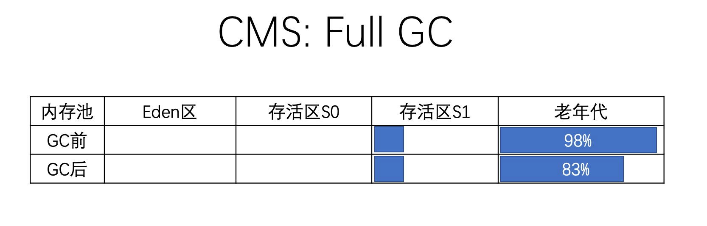

- 01 阅读此专栏的正确姿势.md.html
- 02 环境准备：千里之行，始于足下.md.html
- 03 常用性能指标：没有量化，就没有改进.md.html
- 04 JVM 基础知识：不积跬步，无以至千里.md.html
- 05 Java 字节码技术：不积细流，无以成江河.md.html
- 06 Java 类加载器：山不辞土，故能成其高.md.html
- 07 Java 内存模型：海不辞水，故能成其深.md.html
- 08 JVM 启动参数详解：博观而约取、厚积而薄发.md.html
- 09 JDK 内置命令行工具：工欲善其事，必先利其器.md.html
- 10 JDK 内置图形界面工具：海阔凭鱼跃，天高任鸟飞.md.html
- 11 JDWP 简介：十步杀一人，千里不留行.md.html
- 12 JMX 与相关工具：山高月小，水落石出.md.html
- 13 常见的 GC 算法（GC 的背景与原理）.md.html
- 14 常见的 GC 算法（ParallelCMSG1）.md.html
- 15 Java11 ZGC 和 Java12 Shenandoah 介绍：苟日新、日日新、又日新.md.html
- 16 Oracle GraalVM 介绍：会当凌绝顶、一览众山小.md.html
- 17 GC 日志解读与分析（基础配置）.md.html
- 18 GC 日志解读与分析（实例分析上篇）.md.html
- 19 GC 日志解读与分析（实例分析中篇）.md.html
- 20 GC 日志解读与分析（实例分析下篇）.md.html
- 21 GC 日志解读与分析（番外篇可视化工具）.md.html
- 22 JVM 的线程堆栈等数据分析：操千曲而后晓声、观千剑而后识器.md.html
- 23 内存分析与相关工具上篇（内存布局与分析工具）.md.html
- 24 内存分析与相关工具下篇（常见问题分析）.md.html
- 25 FastThread 相关的工具介绍：欲穷千里目，更上一层楼.md.html
- 26 面临复杂问题时的几个高级工具：它山之石，可以攻玉.md.html
- 27 JVM 问题排查分析上篇（调优经验）.md.html
- 28 JVM 问题排查分析下篇（案例实战）.md.html
- 29 GC 疑难情况问题排查与分析（上篇）.md.html
- 30 GC 疑难情况问题排查与分析（下篇）.md.html
- 31 JVM 相关的常见面试问题汇总：运筹策帷帐之中，决胜于千里之外.md.html
- 32 应对容器时代面临的挑战：长风破浪会有时、直挂云帆济沧海.md.html
19 GC 日志解读与分析（实例分析中篇）
CMS 的 GC 日志解读
CMS 也可称为“并发标记清除垃圾收集器”。其设计目标是避免在老年代 GC 时出现长时间的卡顿。默认情况下，CMS 使用的并发线程数等于 CPU 内核数的 1/4。
通过以下选项来指定 CMS 垃圾收集器：
-XX:+UseConcMarkSweepGC
如果 CPU 资源受限，CMS 的吞吐量会比并行 GC 差一些。示例：
# 请注意命令行启动时没有换行，此处是方便大家阅读。
java -XX:+UseConcMarkSweepGC
-Xms512m
-Xmx512m
-Xloggc：gc.demo.log
-XX:+PrintGCDetails
-XX:+PrintGCDateStamps
demo.jvm0204.GCLogAnalysis
和前面分析的串行 GC/并行 GC 一样，我们将程序启动起来，看看 CMS 算法生成的 GC 日志是什么样子：
Java HotSpot(TM) 64-Bit Server VM (25.162-b12) 。。。
Memory： 4k page，physical 16777216k(1168104k free)
CommandLine flags：
-XX:InitialHeapSize=536870912 -XX:MaxHeapSize=536870912
-XX:MaxNewSize=178958336 -XX:MaxTenuringThreshold=6
-XX:NewSize=178958336 -XX:OldPLABSize=16 -XX:OldSize=357912576
-XX:+PrintGC -XX:+PrintGCDateStamps
-XX:+PrintGCDetails -XX:+PrintGCTimeStamps
-XX:+UseCompressedClassPointers -XX:+UseCompressedOops
-XX:+UseConcMarkSweepGC -XX:+UseParNewGC
2019-12-22T00:00:31.865-0800: 1.067：
[GC (Allocation Failure)
2019-12-22T00:00:31.865-0800: 1.067：
[ParNew： 136418K->17311K(157248K)，0.0233955 secs]
442378K->360181K(506816K)，0.0234719 secs]
[Times: user=0.10 sys=0.02，real=0.02 secs]
2019-12-22T00:00:31.889-0800: 1.091：
[GC (CMS Initial Mark)
[1 CMS-initial-mark: 342870K(349568K)]
363883K(506816K)，0.0002262 secs]
[Times: user=0.00 sys=0.00,real=0.00 secs]
2019-12-22T00:00:31.889-0800: 1.091：
[CMS-concurrent-mark-start]
2019-12-22T00:00:31.890-0800: 1.092：
[CMS-concurrent-mark: 0.001/0.001 secs]
[Times: user=0.00 sys=0.00,real=0.01 secs]
2019-12-22T00:00:31.891-0800: 1.092：
[CMS-concurrent-preclean-start]
2019-12-22T00:00:31.891-0800: 1.093：
[CMS-concurrent-preclean: 0.001/0.001 secs]
[Times: user=0.00 sys=0.00,real=0.00 secs]
2019-12-22T00:00:31.891-0800: 1.093：
[CMS-concurrent-abortable-preclean-start]
2019-12-22T00:00:31.891-0800: 1.093：
[CMS-concurrent-abortable-preclean: 0.000/0.000 secs]
[Times: user=0.00 sys=0.00,real=0.00 secs]
2019-12-22T00:00:31.891-0800: 1.093：
[GC (CMS Final Remark)
[YG occupancy: 26095 K (157248 K)]
2019-12-22T00:00:31.891-0800: 1.093：
[Rescan (parallel) ，0.0002680 secs]
2019-12-22T00:00:31.891-0800: 1.093：
[weak refs processing，0.0000230 secs]
2019-12-22T00:00:31.891-0800: 1.093：
[class unloading，0.0004008 secs]
2019-12-22T00:00:31.892-0800: 1.094：
[scrub symbol table，0.0006072 secs]
2019-12-22T00:00:31.893-0800: 1.095：
[scrub string table，0.0001769 secs]
[1 CMS-remark: 342870K(349568K)]
368965K(506816K)，0.0015928 secs]
[Times: user=0.01 sys=0.00,real=0.00 secs]
2019-12-22T00:00:31.893-0800: 1.095：
[CMS-concurrent-sweep-start]
2019-12-22T00:00:31.893-0800: 1.095：
[CMS-concurrent-sweep： 0.000/0.000 secs]
[Times: user=0.00 sys=0.00,real=0.00 secs]
2019-12-22T00:00:31.893-0800: 1.095：
[CMS-concurrent-reset-start]
2019-12-22T00:00:31.894-0800: 1.096：
[CMS-concurrent-reset: 0.000/0.000 secs]
[Times: user=0.00 sys=0.00,real=0.00 secs]
这只是摘录的一部分 GC 日志。比起串行 GC/并行 GC 来说，CMS 的日志信息复杂了很多，这一方面是因为 CMS 拥有更加精细的 GC 步骤，另一方面 GC 日志很详细就意味着暴露出来的信息也就更全面细致。
Minor GC 日志分析
最前面的几行日志是清理年轻代的 Minor GC 事件：
2019-12-22T00:00:31.865-0800: 1.067：
[GC (Allocation Failure)
2019-12-22T00:00:31.865-0800: 1.067：
[ParNew： 136418K->17311K(157248K)，0.0233955 secs]
442378K->360181K(506816K)，0.0234719 secs]
[Times: user=0.10 sys=0.02，real=0.02 secs]
我们一起来解读：
2019-12-22T00:00:31.865-0800: 1.067：GC 事件开始的时间。GC (Allocation Failure)：用来区分 Minor GC 还是 Full GC 的标志。GC表明这是一次“小型 GC”；Allocation Failure表示触发 GC 的原因。本次 GC 事件，是由于年轻代可用空间不足，新对象的内存分配失败引起的。[ParNew： 136418K->17311K(157248K)，0.0233955 secs]：其中ParNew是垃圾收集器的名称，对应的就是前面日志中打印的-XX:+UseParNewGC这个命令行标志。表示在年轻代中使用的“并行的标记—复制（mark-copy）”垃圾收集器，专门设计了用来配合 CMS 垃圾收集器，因为 CMS 只负责回收老年代。后面的数字表示 GC 前后的年轻代使用量变化，以及年轻代的总大小。0.0233955 secs是消耗的时间。442378K->360181K(506816K)，0.0234719 secs：表示 GC 前后堆内存的使用量变化，以及堆内存空间的大小。消耗的时间是0.0234719 secs，和前面的 ParNew 部分的时间基本上一样。[Times: user=0.10 sys=0.02，real=0.02 secs]：GC 事件的持续时间。user是 GC 线程所消耗的总 CPU 时间；sys是操作系统调用和系统等待事件消耗的时间；应用程序实际暂停的时间real ~= (user + sys)/GC线程数。我的机器是 4 核 8 线程，而这里是 6 倍的比例，因为总有一定比例的处理过程是不能并行执行的。
进一步计算和分析可以得知，在 GC 之前，年轻代使用量为 136418K/157248K=86%。堆内存的使用率为 442378K/506816K=87%。稍微估算一下，老年代的使用率为：(442378K-136418K)/(506816K-157248K)=(305960K /349568K)=87%。这里是凑巧了，GC 之前 3 个比例都在 87% 左右。
GC 之后呢？年轻代使用量为 17311K ~= 17%，下降了 119107K。堆内存使用量为 360181K ~= 71%，只下降了 82197K。两个下降值相减，就是年轻代提升到老年代的内存量：119107-82197=36910K。
那么老年代空间有多大？老年代使用量是多少？正在阅读的同学，请开动脑筋，用这些数字算一下。
此次 GC 的内存变化示意图为：
哇塞，这个数字不得了，老年代使用量 98% 了，非常高了。后面紧跟着就是一条 Full GC 的日志，请接着往下看。
Full GC 日志分析
实际上这次截取的年轻代 GC 日志和 FullGC 日志是紧连着的，我们从间隔时间也能大致看出来，1.067 + 0.02secs ~ 1.091。
CMS 的日志是一种完全不同的格式，并且很长，因为 CMS 对老年代进行垃圾收集时每个阶段都会有自己的日志。为了简洁，我们将对这部分日志按照阶段依次介绍。
首先来看 CMS 这次 FullGC 的日志：
2019-12-22T00:00:31.889-0800: 1.091:
[GC (CMS Initial Mark)
[1 CMS-initial-mark: 342870K(349568K)]
363883K(506816K)，0.0002262 secs]
[Times: user=0.00 sys=0.00,real=0.00 secs]
2019-12-22T00:00:31.889-0800: 1.091:
[CMS-concurrent-mark-start]
2019-12-22T00:00:31.890-0800: 1.092:
[CMS-concurrent-mark: 0.001/0.001 secs]
[Times: user=0.00 sys=0.00,real=0.01 secs]
2019-12-22T00:00:31.891-0800: 1.092:
[CMS-concurrent-preclean-start]
2019-12-22T00:00:31.891-0800: 1.093:
[CMS-concurrent-preclean: 0.001/0.001 secs]
[Times: user=0.00 sys=0.00,real=0.00 secs]
2019-12-22T00:00:31.891-0800: 1.093:
[CMS-concurrent-abortable-preclean-start]
2019-12-22T00:00:31.891-0800: 1.093:
[CMS-concurrent-abortable-preclean: 0.000/0.000 secs]
[Times: user=0.00 sys=0.00,real=0.00 secs]
2019-12-22T00:00:31.891-0800: 1.093:
[GC (CMS Final Remark)
[YG occupancy: 26095 K (157248 K)]
2019-12-22T00:00:31.891-0800: 1.093:
[Rescan (parallel) ，0.0002680 secs]
2019-12-22T00:00:31.891-0800: 1.093:
[weak refs processing，0.0000230 secs]
2019-12-22T00:00:31.891-0800: 1.093:
[class unloading，0.0004008 secs]
2019-12-22T00:00:31.892-0800: 1.094:
[scrub symbol table，0.0006072 secs]
2019-12-22T00:00:31.893-0800: 1.095:
[scrub string table，0.0001769 secs]
[1 CMS-remark: 342870K(349568K)]
368965K(506816K)，0.0015928 secs]
[Times: user=0.01 sys=0.00,real=0.00 secs]
2019-12-22T00:00:31.893-0800: 1.095:
[CMS-concurrent-sweep-start]
2019-12-22T00:00:31.893-0800: 1.095:
[CMS-concurrent-sweep： 0.000/0.000 secs]
[Times: user=0.00 sys=0.00,real=0.00 secs]
2019-12-22T00:00:31.893-0800: 1.095:
[CMS-concurrent-reset-start]
2019-12-22T00:00:31.894-0800: 1.096:
[CMS-concurrent-reset: 0.000/0.000 secs]
[Times: user=0.00 sys=0.00,real=0.00 secs]
在实际运行中，CMS 在进行老年代的并发垃圾回收时，可能会伴随着多次年轻代的 Minor GC（想想是为什么）。在这种情况下，Full GC 的日志中可能会掺杂着多次 Minor GC 事件。
阶段 1：Initial Mark（初始标记）
前面章节提到过，这个阶段伴随着 STW 暂停。初始标记的目标是标记所有的根对象，包括 GC ROOT 直接引用的对象，以及被年轻代中所有存活对象所引用的对象。后面这部分也非常重要，因为老年代是独立进行回收的。
先看这个阶段的日志：
2019-12-22T00:00:31.889-0800: 1.091:
[GC (CMS Initial Mark)
[1 CMS-initial-mark: 342870K(349568K)]
363883K(506816K), 0.0002262 secs]
[Times: user=0.00 sys=0.00,real=0.00 secs]
让我们简单解读一下：
2019-12-22T00:00:31.889-0800: 1.091:：时间部分就不讲了，参考前面的解读。后面的其他阶段也一样，不再进行重复介绍。CMS Initial Mark：这个阶段的名称为“Initial Mark”，会标记所有的 GC Root。[1 CMS-initial-mark: 342870K(349568K)]：这部分数字表示老年代的使用量，以及老年代的空间大小。363883K(506816K)，0.0002262 secs：当前堆内存的使用量，以及可用堆的大小、消耗的时间。可以看出这个时间非常短，只有 0.2 毫秒左右，因为要标记的这些 Roo 数量很少。[Times: user=0.00 sys=0.00,real=0.00 secs]：初始标记事件暂停的时间，可以看到可以忽略不计。
阶段 2：Concurrent Mark（并发标记）
在并发标记阶段，CMS 从前一阶段“Initial Mark”找到的 ROOT 开始算起，遍历老年代并标记所有的存活对象。
看看这个阶段的 GC 日志：
2019-12-22T00:00:31.889-0800: 1.091:
[CMS-concurrent-mark-start]
2019-12-22T00:00:31.890-0800: 1.092:
[CMS-concurrent-mark: 0.001/0.001 secs]
[Times: user=0.00 sys=0.00,real=0.01 secs]
简单解读一下：
CMS-concurrent-mark：指明了是 CMS 垃圾收集器所处的阶段为并发标记（“Concurrent Mark”）。0.001/0.001 secs：此阶段的持续时间，分别是 GC 线程消耗的时间和实际消耗的时间。[Times: user=0.00 sys=0.00,real=0.01 secs]：Times对并发阶段来说这些时间并没多少意义，因为是从并发标记开始时刻计算的，而这段时间应用线程也在执行，所以这个时间只是一个大概的值。
阶段 3：Concurrent Preclean（并发预清理）
此阶段同样是与应用线程并发执行的，不需要停止应用线程。
看看并发预清理阶段的 GC 日志：
2019-12-22T00:00:31.891-0800: 1.092:
[CMS-concurrent-preclean-start]
2019-12-22T00:00:31.891-0800: 1.093:
[CMS-concurrent-preclean: 0.001/0.001 secs]
[Times: user=0.00 sys=0.00,real=0.00 secs]
简单解读：
CMS-concurrent-preclean：表明这是并发预清理阶段的日志，这个阶段会统计前面的并发标记阶段执行过程中发生了改变的对象。0.001/0.001 secs：此阶段的持续时间，分别是 GC 线程运行时间和实际占用的时间。[Times: user=0.00 sys=0.00,real=0.00 secs]：Times 这部分对并发阶段来说没多少意义，因为是从开始时间计算的，而这段时间内不仅 GC 线程在执行并发预清理，应用线程也在运行。
阶段 4：Concurrent Abortable Preclean（可取消的并发预清理）
此阶段也不停止应用线程，尝试在会触发 STW 的 Final Remark 阶段开始之前，尽可能地多干一些活。
本阶段的具体时间取决于多种因素，因为它循环做同样的事情，直到满足某一个退出条件（如迭代次数、有用工作量、消耗的系统时间等等）。
看看 GC 日志：
2019-12-22T00:00:31.891-0800: 1.093:
[CMS-concurrent-abortable-preclean-start]
2019-12-22T00:00:31.891-0800: 1.093:
[CMS-concurrent-abortable-preclean: 0.000/0.000 secs]
[Times: user=0.00 sys=0.00,real=0.00 secs]
简单解读：
CMS-concurrent-abortable-preclean：指示此阶段的名称：“Concurrent Abortable Preclean”。0.000/0.000 secs：此阶段 GC 线程的运行时间和实际占用的时间。从本质上讲，GC 线程试图在执行 STW 暂停之前等待尽可能长的时间。默认条件下，此阶段可以持续最长 5 秒钟的时间。[Times: user=0.00 sys=0.00,real=0.00 secs]：“Times”这部分对并发阶段来说没多少意义，因为程序在并发阶段中持续运行。
此阶段完成的工作可能对 STW 停顿的时间有较大影响，并且有许多重要的配置选项和失败模式。
阶段 5：Final Remark（最终标记）
最终标记阶段是此次 GC 事件中的第二次（也是最后一次）STW 停顿。
本阶段的目标是完成老年代中所有存活对象的标记。因为之前的预清理阶段是并发执行的，有可能 GC 线程跟不上应用程序的修改速度。所以需要一次 STW 暂停来处理各种复杂的情况。
通常 CMS 会尝试在年轻代尽可能空的情况下执行 final remark 阶段，以免连续触发多次 STW 事件。
这部分的 GC 日志看起来稍微复杂一些：
2019-12-22T00:00:31.891-0800: 1.093:
[GC (CMS Final Remark)
[YG occupancy: 26095 K (157248 K)]
2019-12-22T00:00:31.891-0800: 1.093:
[Rescan (parallel) ，0.0002680 secs]
2019-12-22T00:00:31.891-0800: 1.093:
[weak refs processing，0.0000230 secs]
2019-12-22T00:00:31.891-0800: 1.093:
[class unloading，0.0004008 secs]
2019-12-22T00:00:31.892-0800: 1.094:
[scrub symbol table，0.0006072 secs]
2019-12-22T00:00:31.893-0800: 1.095:
[scrub string table，0.0001769 secs]
[1 CMS-remark: 342870K(349568K)]
368965K(506816K)，0.0015928 secs]
[Times: user=0.01 sys=0.00,real=0.00 secs]
一起来进行解读：
CMS Final Remark：这是此阶段的名称，最终标记阶段，会标记老年代中所有的存活对象，包括此前的并发标记过程中创建/修改的引用。YG occupancy: 26095 K (157248 K)：当前年轻代的使用量和总容量。[Rescan (parallel) ，0.0002680 secs]：在程序暂停后进行重新扫描（Rescan），以完成存活对象的标记。这部分是并行执行的，消耗的时间为 0.0002680 秒。weak refs processing，0.0000230 secs：第一个子阶段，处理弱引用的持续时间。class unloading，0.0004008 secs：第二个子阶段，卸载不使用的类，以及持续时间。scrub symbol table，0.0006072 secs：第三个子阶段，清理符号表，即持有 class 级别 metadata 的符号表（symbol tables）。scrub string table，0.0001769 secs：第四个子阶段， 清理内联字符串对应的 string tables。[1 CMS-remark: 342870K(349568K)]：此阶段完成后老年代的使用量和总容量。368965K(506816K)，0.0015928 secs：此阶段完成后，整个堆内存的使用量和总容量。[Times: user=0.01 sys=0.00,real=0.00 secs]：GC 事件的持续时间。
在这 5 个标记阶段完成后，老年代中的所有存活对象都被标记上了，接下来 JVM 会将所有不使用的对象清除，以回收老年代空间。
阶段 6：Concurrent Sweep（并发清除）
此阶段与应用程序并发执行，不需要 STW 停顿。目的是删除不再使用的对象，并回收他们占用的内存空间。
看看这部分的 GC 日志：
2019-12-22T00:00:31.893-0800: 1.095:
[CMS-concurrent-sweep-start]
2019-12-22T00:00:31.893-0800: 1.095:
[CMS-concurrent-sweep: 0.000/0.000 secs]
[Times: user=0.00 sys=0.00,real=0.00 secs]
简单解读：
CMS-concurrent-sweep：此阶段的名称，“Concurrent Sweep”，并发清除老年代中所有未被标记的对象、也就是不再使用的对象，以释放内存空间。0.000/0.000 secs：此阶段的持续时间和实际占用的时间，这是一个四舍五入值，只精确到小数点后 3 位。[Times: user=0.00 sys=0.00,real=0.00 secs]：“Times”部分对并发阶段来说没有多少意义，因为是从并发标记开始时计算的，而这段时间内不仅是并发标记线程在执行，程序线程也在运行。
阶段 7：Concurrent Reset（并发重置）
此阶段与应用程序线程并发执行，重置 CMS 算法相关的内部数据结构，下一次触发 GC 时就可以直接使用。
对应的日志为：
2019-12-22T00:00:31.893-0800: 1.095:
[CMS-concurrent-reset-start]
2019-12-22T00:00:31.894-0800: 1.096:
[CMS-concurrent-reset: 0.000/0.000 secs]
[Times: user=0.00 sys=0.00,real=0.00 secs]
简单解读：
CMS-concurrent-reset：此阶段的名称，“Concurrent Reset”，重置 CMS 算法的内部数据结构，为下一次 GC 循环做准备。0.000/0.000 secs：此阶段的持续时间和实际占用的时间[Times: user=0.00 sys=0.00,real=0.00 secs]：“Times”部分对并发阶段来说没多少意义，因为是从并发标记开始时计算的，而这段时间内不仅 GC 线程在运行，程序也在运行。
那么问题来了，CMS 之后老年代内存使用量是多少呢？很抱歉这里分析不了，只能通过后面的 Minor GC 日志来分析了。
例如本次运行，后面的 GC 日志是这样的：
2019-12-22T00:00:31.921-0800: 1.123:
[GC (Allocation Failure) 2019-12-22T00:00:31.921-0800: 1.123:
[ParNew: 153242K->16777K(157248K), 0.0070050 secs]
445134K->335501K(506816K)，
0.0070758 secs]
[Times: user=0.05 sys=0.00,real=0.00 secs]
参照前面年轻代 GC 日志的分析方法，我们推算出来，上面的 CMS Full GC 之后，老年代的使用量应该是：445134K-153242K=291892K，老年代的总容量 506816K-157248K=349568K，所以 Full GC 之后老年代的使用量占比是 291892K/349568K=83%。
这个占比不低。说明什么问题呢？ 一般来说就是分配的内存小了，毕竟我们才指定了 512MB 的最大堆内存。
按照惯例，来一张 GC 前后的内存使用情况示意图：

总之，CMS 垃圾收集器在减少停顿时间上做了很多给力的工作，很大一部分 GC 线程是与应用线程并发运行的，不需要暂停应用线程，这样就可以在一般情况下每次暂停的时候较少。当然，CMS 也有一些缺点，其中最大的问题就是老年代的内存碎片问题，在某些情况下 GC 会有不可预测的暂停时间，特别是堆内存较大的情况下。
透露一个学习 CMS 的诀窍：参考上面各个阶段的示意图，请同学们自己画一遍。
本节的学习到此就结束了，下一节我们继续介绍 G1 日志分析。